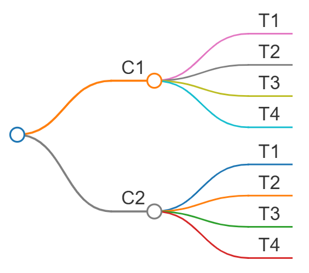
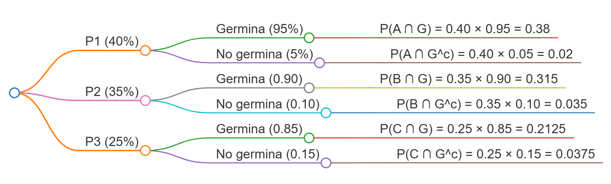

13 Conceptos, métodos y propiedades básicas
La mayor parte de los problemas en estadística involucran elementos de incertidumbre, ya que usualmente no es posible determinar anticipadamente las características de una población desconocida o prever las consecuencias exactas de la toma de una decisión. Por lo tanto, es conveniente disponer de una medida que exprese esa incertidumbre en términos de una escala numérica. Esta medida es la probabilidad (López & González, 2018).
En el contexto agronómico, la probabilidad permite modelar y cuantificar la variabilidad inherente en los procesos biológicos, climáticos y productivos. Por ejemplo, se puede utilizar para evaluar la probabilidad de ocurrencia de plagas, el éxito de tratamientos fitosanitarios, o la variabilidad en rendimientos de cultivos.
13.1 Conceptos Fundamentales
13.1.1 Experimento y Experimento Aleatorio
Un experimento es el proceso mediante el cual se obtiene una observación o medida de un fenómeno. Cuando el resultado del experimento no puede preverse con certeza debido a la variabilidad inherente del fenómeno, se denomina experimento aleatorio (López & González, 2018).
Ejemplos de experimentos aleatorios:
Lanzamiento de un dado y observación del número mostrado en la cara superior
Lanzamiento de una moneda cuatro veces y observación del número de caras obtenido
Prueba de duración de una lámpara, anotando el tiempo transcurrido desde que se enciende hasta que se quema
Cruzamiento de animales y observación del sexo del primero que nace
Conteo del número de larvas de gusano cogollero en plantas de maíz
Conteo del número de piezas defectuosas producidas en una línea de producción durante 24 horas
13.1.2 Espacio Muestral
El espacio muestral es el conjunto de todos los posibles resultados de un experimento aleatorio. Se denota con el símbolo \(\Omega\) (López & González, 2018).
Ejemplos de espacios muestrales:
Para el lanzamiento de un dado: \(\Omega = \{1, 2, 3, 4, 5, 6\}\)
Para el lanzamiento de una moneda cuatro veces: \(\Omega = \{0, 1, 2, 3, 4\}\)
Para la duración de una lámpara: \(\Omega = \{t | t \geq 0\}\)
Para el sexo de una cría: \(\Omega = \{\text{Macho, Hembra}\}\)
Para el conteo de larvas: \(\Omega = \{0, 1, 2, ...\}\)
13.1.3 Evento
Un evento A es un subconjunto del espacio muestral \(\Omega\). En terminología de conjuntos, un evento es simplemente un conjunto de resultados posibles del experimento aleatorio. Los eventos se denotan con letras mayúsculas como A, B, C, etc. (López & González, 2018).
Ejemplos de eventos:
\(A_1\): Sale un número par en el lanzamiento de un dado, \(A_1 = \{2, 4, 6\}\)
\(A_2\): Ocurren dos caras en cuatro lanzamientos, \(A_2 = \{2\}\)
\(A_3\): La lámpara se quema en menos de 3 horas, \(A_3 = \{t | 0 \leq t < 3\}\)
13.2 Métodos para Asignar Probabilidades
Independientemente del método utilizado, se deben satisfacer dos requisitos básicos:
Los valores de probabilidad asignados a cada resultado experimental deben estar entre 0 y 1: \[\LARGE 0 \leq P(E_i) \leq 1, \text{ para toda } i\]
La suma de todas las probabilidades de resultados experimentales debe ser 1: \[\LARGE \sum_{i=1}^{k} P(E_i) = 1\]
13.2.1 Método Clásico
Si un evento A puede ocurrir en \(h\) maneras diferentes de un número total de \(n\) maneras posibles, todas igualmente probables, entonces la probabilidad del evento es:
\[\LARGE P(A) = \frac{h}{n} = \frac{\text{número de resultados favorables}}{\text{número de resultados posibles}}\]
Ejemplo: En el lanzamiento de dos dados honestos, calcule las probabilidades de los siguientes eventos:
A: La suma de los valores es igual a 7
B: Los resultados en los dados son iguales
C: La suma de los valores es 9 o más
El espacio muestral contiene 36 resultados posibles. Contando los casos favorables:
Para A: \({(1,6),(2,5),(3,4),(4,3),(5,2),(6,1)}\), entonces \(P(A) = \frac{6}{36} = 0.167\)
Para B: \({(1,1), (2,2), (3,3), (4,4), (5,5), (6,6)}\), entonces \(P(B) = \frac{6}{36} = 0.167\)
Para C: 10 casos favorables, entonces \(P(C) = \frac{10}{36} = 0.278P\)
13.2.2 Método de la Frecuencia Relativa
Si después de nnn repeticiones de un experimento donde nnn es “muy grande”, un evento ocurre hhh veces, entonces la probabilidad del evento es:
\[\huge P(A) = \frac{h}{n}\]
Ejemplo: Si se lanza una moneda 1000 veces y resultan 532 caras, se puede estimar que: \[\Large P(\text{cara}) = \frac{532}{1000} = 0.532\]
13.2.3 Método Subjetivo
Este método está basado en el juicio personal. Se puede usar cualquier dato disponible junto con la experiencia e intuición del investigador.
13.3 Relaciones Básicas de Probabilidad
13.3.1 Complemento de un Evento
Dado un evento A, el complemento de A se define como el evento formado por todos los puntos muestrales que no están en A, y se representa por \(A^c\).
\[\LARGE P(A) + P(A^c) = 1\]
Por lo tanto: \(P(A) = 1 - P(A^c)\)
13.3.2 Ley Aditiva
La ley aditiva es útil cuando se tienen dos eventos y se desea conocer la probabilidad de que ocurra por lo menos uno de ellos. Para eventos A y B:
\[\Large P(A \cup B) = P(A) + P(B) - P(A \cap B)\]
Ejemplo: El gerente de personal de una empresa agroforestal encontró que el 30% de los empleados que salieron lo hicieron por insatisfacción salarial, el 20% por insatisfacción laboral, y el 12% por ambas razones.
Sean:
S: evento de salida por salario
W: evento de salida por trabajo
\[\large P(S \cup W) = P(S) + P(W) - P(S \cap W) = 0.30 + 0.20 - 0.12 = 0.38\]
13.3.3 Eventos Mutuamente Excluyentes
Dos eventos son mutuamente excluyentes si no tienen puntos muestrales en común, es decir, \(P(A \cap B) = 0\).
Para eventos mutuamente excluyentes:
\[\LARGE P(A \cup B) = P(A) + P(B)\]
13.4 Probabilidad Condicional
La probabilidad condicional de un evento A dado que ha ocurrido B se denota como \(P(A|B)\) y se define como:
\[\LARGE P(A|B) = \frac{P(A \cap B)}{P(B)}, \text{ siempre que } P(B) > 0\]
Esta notación se lee como “la probabilidad de A dado B” y representa la probabilidad de que ocurra A sabiendo que B ya ha ocurrido.
Ejemplo: En una facultad de agronomía se tiene la siguiente distribución de estudiantes:
| Carrera | Masculino | Femenino | Total |
|---|---|---|---|
| Agronomía | 160 | 40 | 200 |
| Forestal | 30 | 10 | 40 |
| Agroindustrial | 15 | 10 | 25 |
| Total | 205 | 60 | 265 |
Dado que un alumno cursa Agronomía (A), ¿cuál es la probabilidad de que sea masculino (H)?
\[\Large P(H|A) = \frac{P(H \cap A)}{P(A)} = \frac{160/265}{200/265} = \frac{160}{200} = 0.80\]
13.5 Eventos Independientes
Dos eventos A y B son independientes si:
\[\Large P(A|B) = P(A) \text{ o } P(B|A) = P(B)\]
De lo contrario, los eventos son dependientes.
13.6 Ley Multiplicativa
Mientras que la ley aditiva se utiliza para determinar la probabilidad de una unión entre dos eventos, la ley multiplicativa se usa para determinar la probabilidad de una intersección de dos eventos:
\[\LARGE P(A \cap B) = P(B) \cdot P(A|B)\]
o también:
\[\LARGE P(A \cap B) = P(A) \cdot P(B|A)\]
13.6.1 Ley Multiplicativa para Eventos Independientes
Para eventos independientes:
\[\LARGE P(A \cap B) = P(A) \cdot P(B)\]
Ejemplo: El gerente de una gasolinera sabe que el 80% de los clientes usan tarjeta de crédito. ¿Cuál es la probabilidad de que dos clientes consecutivos usen tarjeta de crédito?
\[\LARGE P(A \cap B) = P(A) \cdot P(B) = 0.8 \times 0.8 = 0.64\]
13.7 Diagramas de Árbol
Un diagrama de árbol es una herramienta gráfica que se emplea frecuentemente en conexión con el principio multiplicativo. Debido a su apariencia, permite visualizar todos los posibles resultados de un experimento compuesto y facilita el cálculo de probabilidades.
Ejemplo: Si un hombre tiene 2 camisas (\(S_1, S_2\)) y 4 corbatas (\(T_1, T_2, T_3, T_4\)), entonces tiene \(2 \times 4 = 8\) maneras de escoger una camisa y luego una corbata.
El diagrama de árbol correspondiente sería:

13.7.1 Uso de Diagramas de Árbol en Probabilidad Condicional
Los diagramas de árbol son especialmente útiles para problemas de probabilidad condicional, donde las probabilidades en las ramas posteriores dependen de los resultados de las ramas anteriores.
Ejemplo aplicado: Una empresa agrícola tiene tres proveedores de semillas. El proveedor A suministra el 40% de las semillas, el proveedor B el 35%, y el proveedor C el 25%. Las tasas de germinación son del 95%, 90%, y 85% respectivamente.
El diagrama de árbol sería:

13.8 Teorema de Bayes
El teorema de Bayes también se conoce como “probabilidad de las causas”, es decir, la probabilidad de un hecho anterior sabiendo la probabilidad de un hecho posterior. Se basa en que los eventos definidos sobre un espacio muestral son particiones del mismo.
Si \(A_1, A_2, A_3, ..., A_n\) son eventos mutuamente excluyentes y exhaustivos, y \(B\) es un evento observado, entonces:
\[\LARGE P(A_i|B) = \frac{P(A_i) \cdot P(B|A_i)}{\sum_{j=1}^{n} P(A_j) \cdot P(B|A_j)}\]
donde:
\(P(A_i)\) son las probabilidades a priori
\(P(B|A_i)\) son las probabilidades condicionales
\(P(A_i|B)\) son las probabilidades a posteriori
Ejemplo resuelto: Una fábrica con 3 sucursales produce 40%, 35% y 25% del total de la producción. Tienen porcentajes de artículos defectuosos de 4%, 6% y 8%, respectivamente. Si se elige aleatoriamente un artículo:
a) ¿Cuál es la probabilidad de que no sea defectuoso?
Usando la ley de probabilidad total:
\[\large P(C) = P(A_1) \cdot P(C|A_1) + P(A_2) \cdot P(C|A_2) + P(A_3) \cdot P(C|A_3)\]
\[\large P(C) = 0.40 \times 0.96 + 0.35 \times 0.94 + 0.25 \times 0.92 = 0.943\]
b) Si resultó defectuoso, ¿cuál es la probabilidad de que proceda de la primera sucursal?
Primero calculamos \[\Large P(B) = 1 - P(C) = 1 - 0.943 = 0.057\]
Luego aplicamos Bayes:
\[\Large P(A_1|B) = \frac{P(A_1) \cdot P(B|A_1)}{P(B)} = \frac{0.40 \times 0.04}{0.057} = 0.2807\]
13.8.1 Tabla de Análisis para el Teorema de Bayes
| Eventos | Probabilidades previas | Probabilidades condicionales | Probabilidades conjuntas | Probabilidades posteriores |
|---|---|---|---|---|
| \(A_i\) | \(P(A_i)\) | \(P(C)\) | \(P(A_i) \cdot P(C|A_i)\) | \(P(A_i| B)\) |
| \(A_1\) | 0.40 | 0.04 | 0.016 | 0.2807 |
| \(A_2\) | 0.35 | 0.06 | 0.021 | 0.3684 |
| \(A_3\) | 0.25 | 0.08 | 0.020 | 0.3509 |
| Total | 1.00 | P(B) = 0.057 | 1.0000 |
13.9 Notación Correcta para Probabilidades
Es fundamental utilizar la notación correcta para evitar confusiones:
\(P(A)\): Probabilidad marginal del evento A
\(P(A \cap B)\): Probabilidad conjunta de A y B (intersección)
\(P(A \cup B)\): Probabilidad de la unión de A y B
\(P(A|B)\): Probabilidad condicional de A dado B
\(P(A^c)\): Probabilidad del complemento de A
\(A \perp B\): A y B son independientes